Автоэлектрик ГАЗель с выездом. Компьютерная диагностика, ремонт электрики и проводки, генератора и стартера, поиск ошибок, диагностика датчиков и CAN-шины. ГАЗель Next и Бизнес.
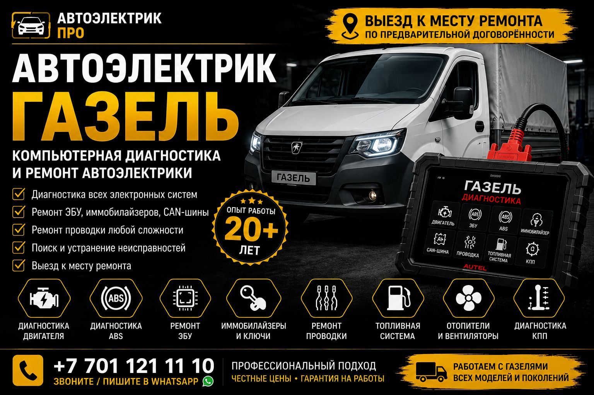
🔧 Проверьте и попробуйте решить сами — приложение «АвтоЭлектрик PRO» →
🚐 Автоэлектрик Газель — диагностика и ремонт электрики
Автоэлектрик Газель — компьютерная диагностика, поиск неисправностей и ремонт электрооборудования автомобилей ГАЗель. Работаем с ГАЗель Next, ГАЗель Бизнес и другими модификациями.
Если ГАЗель не заводится, глохнет на ходу, не работает стартер или генератор, появились ошибки двигателя, пропала часть электрики или требуется найти неисправность в проводке — проведём диагностику и определим причину.
🔧 Автоэлектрик ГАЗель
💻 Компьютерная диагностика
⚡ Ремонт электропроводки
🔋 Диагностика генератора и аккумулятора
🚐 Ремонт стартера
🚨 Поиск ошибок двигателя
📡 Диагностика CAN-шины
💡 Ремонт освещения
🔌 Поиск короткого замыкания и обрывов
📍 Выездной автоэлектрик по Алматы
🔍 Компьютерная диагностика ГАЗель
Современная ГАЗель имеет электронные системы управления, поэтому при неисправности важно провести полноценную диагностику.
Проверяем:
💻 блок управления двигателем;
⚙️ систему управления двигателем;
🔋 систему зарядки;
🌡️ датчики;
⚡ исполнительные механизмы;
📡 CAN-шину;
🔌 электрические цепи.
При диагностике считываются ошибки и анализируются текущие параметры работы двигателя.
Код ошибки сам по себе не всегда означает неисправность детали. Например, ошибка по датчику может появиться из-за обрыва провода, плохого контакта или проблем с питанием.
🚨 ГАЗель не заводится
Одна из наиболее частых причин обращения к автоэлектрику — ГАЗель не запускается.
В зависимости от симптомов проверяем:
🔋 аккумулятор;
⚡ питание;
🔩 массу двигателя;
🔧 стартер;
🔌 предохранители и реле;
💻 электронный блок управления;
🌡️ датчики;
📡 CAN-шину;
⛽ электрическую часть топливной системы.
Если стартер не крутит — диагностируется цепь запуска.
Если двигатель прокручивается, но не заводится — проверяется наличие необходимых сигналов и работа электронных систем управления двигателем.
🔋 ГАЗель не заряжается
Если постоянно разряжается аккумулятор или на панели загорелась лампа аккумулятора, необходимо проверить систему зарядки.
Проверяем:
⚡ генератор;
🔋 аккумулятор;
🔌 силовые провода;
🔩 массу;
⚙️ регулятор напряжения;
🔧 соединения.
Не всегда виноват генератор. Иногда причина находится в проводке или плохом контакте.
⚡ Ремонт генератора ГАЗель
При неисправности генератора могут наблюдаться:
🔴 слабая зарядка;
🔴 отсутствие зарядки;
🔴 скачки напряжения;
🔴 разряд аккумулятора;
🔴 проблемы с запуском после стоянки.
Проводится диагностика системы зарядки, после чего определяется неисправный компонент.
🔧 Ремонт стартера ГАЗель
Стартер может:
🔴 не включаться;
🔴 щёлкать, но не вращаться;
🔴 вращаться слишком медленно;
🔴 работать через раз;
🔴 продолжать работать после запуска.
Перед ремонтом стартера проверяется аккумулятор и электрическая цепь его управления.
При необходимости выполняется ремонт отдельных элементов стартера.
🔌 Ремонт проводки ГАЗель
Проблемы с электропроводкой могут возникнуть из-за:
⚡ обрыва;
⚡ короткого замыкания;
🔌 окисления контактов;
💧 попадания влаги;
🔥 перегрева соединений;
🔩 плохой массы;
🚐 вибраций и механического повреждения.
Проводится поиск конкретного повреждённого участка и восстановление электрической цепи.
📡 Диагностика CAN-шины ГАЗель
На автомобилях с электронной системой управления проблемы с CAN могут вызывать сразу несколько ошибок.
Возможны:
⚠️ потеря связи с блоком управления;
⚠️ многочисленные ошибки;
⚠️ нестабильная работа электронных систем;
⚠️ проблемы с запуском;
⚠️ периодическое исчезновение связи между блоками.
В таком случае проверяются питание, масса, разъёмы и линии CAN.
🌡️ Диагностика датчиков ГАЗель
Неисправный датчик или его проводка могут влиять на работу двигателя.
Проверяются:
🌡️ температура охлаждающей жидкости;
💨 давление и другие параметры;
🔄 положение коленвала и распредвала;
🌬️ параметры воздуха;
⚙️ сигналы управления двигателем.
При наличии ошибки выясняется, что именно неисправно — датчик, проводка, разъём или система питания.
💡 Ремонт электрики и освещения ГАЗель
Диагностируем неисправности:
💡 фар;
💡 габаритов;
💡 стоп-сигналов;
💡 поворотников;
💡 задних фонарей;
💡 противотуманных фар;
💡 подсветки салона;
💡 дополнительного оборудования.
Если лампа исправна, проверяется питание, масса, предохранители, реле и проводка.
🚐 Автоэлектрик ГАЗель Next
ГАЗель Next имеет большое количество электронных компонентов, поэтому для поиска неисправностей желательно использовать компьютерную диагностику.
Обращаются при:
🚨 Check Engine;
🔋 проблемах с зарядкой;
🚐 сложном запуске;
⚡ неисправностях электрики;
📡 ошибках электронных блоков;
🌡️ проблемах с датчиками;
🔌 неисправностях проводки.
🚐 Автоэлектрик ГАЗель Бизнес
На ГАЗель Бизнес также может потребоваться диагностика электрических систем при проблемах с запуском, зарядкой, освещением или работой двигателя.
Проверяем:
🔋 аккумулятор;
⚡ генератор;
🔧 стартер;
💻 ЭБУ;
🔌 проводку;
🌡️ датчики;
📡 электронные цепи.
🚨 ГАЗель глохнет на ходу
Если автомобиль внезапно заглох во время движения, важно не ограничиваться удалением ошибок.
Проверяется:
🔋 питание;
🔩 масса;
⚡ напряжение бортовой сети;
💻 блок управления;
🌡️ датчики;
📡 CAN;
🔌 проводка;
⛽ электронная часть системы подачи топлива.
Особенно важно провести диагностику сразу после появления неисправности, пока сохранены актуальные ошибки и параметры.
🚚 Автоэлектрик ГАЗель с выездом
ГАЗель часто используется для перевозки грузов, доставки и коммерческих перевозок. Если автомобиль сломался на линии, доставить его на СТО бывает неудобно.
Можно вызвать автоэлектрика:
📍 на стоянку;
📍 к месту поломки;
📍 на территорию предприятия;
📍 к складу;
📍 в гараж;
📍 на парковку.
На месте можно выполнить компьютерную диагностику и первичную проверку электрической системы.
Если неисправность позволяет выполнить ремонт непосредственно на месте — работы проводятся после согласования.
🛠️ Диагностика ГАЗель после ремонта двигателя
После ремонта двигателя желательно проверить электронную часть автомобиля.
Проверяются:
💻 ошибки ЭБУ;
🌡️ датчики;
🔌 разъёмы;
⚡ питание;
🔩 масса;
📊 параметры двигателя.
Это особенно актуально, если после ремонта появились ошибки или двигатель начал работать нестабильно.
🔧 Какие работы выполняет автоэлектрик ГАЗель?
Основные услуги:
🔍 компьютерная диагностика;
⚡ ремонт электропроводки;
🔋 проверка аккумулятора;
⚙️ диагностика генератора;
🔧 диагностика стартера;
💡 ремонт освещения;
📡 диагностика CAN;
🌡️ проверка датчиков;
🔌 поиск короткого замыкания;
🔩 восстановление массы;
💻 диагностика электронных блоков;
🚐 выездная диагностика ГАЗель.
💰 Сколько стоит автоэлектрик ГАЗель?
Цена зависит от неисправности и объёма работы.
На стоимость влияют:
🔹 модель и год выпуска;
🔹 характер неисправности;
🔹 необходимость компьютерной диагностики;
🔹 сложность поиска неисправности;
🔹 состояние проводки;
🔹 необходимость ремонта генератора или стартера;
🔹 место нахождения автомобиля.
Поэтому стоимость ремонта определяется после диагностики.
❓ Частые вопросы
Можно ли вызвать автоэлектрика ГАЗель с выездом?
Да, первичную диагностику можно выполнить непосредственно на месте поломки.
ГАЗель не заводится — что делать?
Необходимо проверить аккумулятор, стартер, питание, массу и электронную систему управления двигателем.
Почему ГАЗель глохнет на ходу?
Причин может быть много — от проблем с питанием и проводкой до неисправности датчиков или системы управления двигателем.
Можно ли диагностировать ГАЗель компьютером?
Да, электронные системы автомобиля диагностируются подходящим оборудованием.
Почему одновременно появились несколько ошибок?
Причиной может быть проблема с питанием, массой, CAN-шиной или общим электронным узлом.
Можно ли найти обрыв проводки?
Да, проводится проверка соответствующей электрической цепи.
Почему ГАЗель не заряжает аккумулятор?
Причина может находиться в генераторе, регуляторе, проводке, соединениях или массе.
Можно ли отремонтировать стартер ГАЗель?
Да, если стартер ремонтопригоден, неисправные элементы могут быть заменены.
Работаете с ГАЗель Next?
Да, проводится компьютерная и электрическая диагностика.
Можно ли провести диагностику ГАЗель после ремонта двигателя?
Да, проверяются ошибки, датчики, питание, проводка и текущие параметры двигателя.
⚡ Нужен автоэлектрик ГАЗель?
Если ГАЗель не заводится, заглохла, не заряжается аккумулятор, появились ошибки, неисправен стартер, генератор или электропроводка, не меняйте детали наугад.
Сначала проводится диагностика, после чего определяется причина неисправности.
🔍 Компьютерная диагностика
💻 Диагностика электронных систем
⚡ Ремонт проводки
🔋 Генератор и аккумулятор
🔧 Стартер
📡 CAN-шина
🌡️ Датчики
💡 Освещение
🚐 Выезд к автомобилю
Автоэлектрик ГАЗель — диагностика, ремонт электрики и выезд к ГАЗель Next, ГАЗель Бизнес и другим автомобилям ГАЗ.
Наши услуги
Компьютерная диагностика Газель: ремонт ЭБУ, проводки, иммобилайзеров, диагностика стартера, генератора, системы, двигателя, КПП, ABS, охлаждения и отопителей.
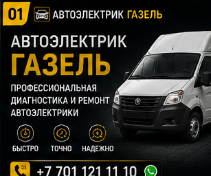
Компьютерная диагностика
Полная диагностика электронных систем автомобиля Газель.
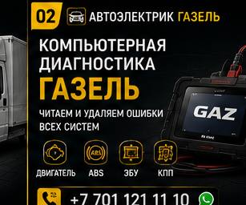
Диагностика и ремонт ЭБУ
Диагностика и ремонт электронных блоков управления.
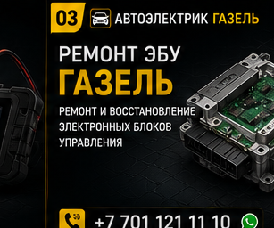
Ремонт электропроводки
Поиск и устранение неисправностей в электрической проводке.
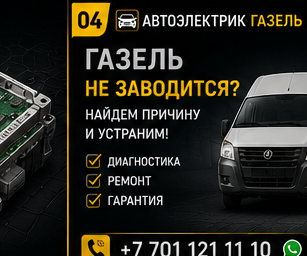
Диагностика CAN-шины
Проверка работы CAN-шины и выявление возможных проблем.
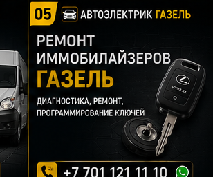
Ремонт иммобилайзеров
Восстановление работы систем иммобилайзеров.
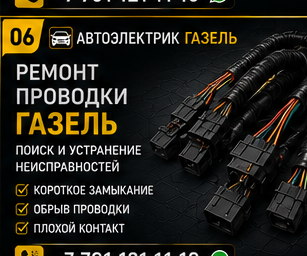
Диагностика и ремонт системы охлаждения
Проверка и устранение неисправностей в системе охлаждения двигателя.
Частые неисправности
Газель не заводится: стартер крутит, но двигатель не запускается. Проблемы: не работает бензонасос, зажигание, генератор; быстро разряжается аккумулятор; горит Check Engine; ошибки ЭБУ, ABS; неисправен вентилятор, стеклоподъёмники, центральный замок.
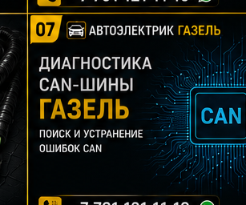
Не заводится автомобиль
Стартер крутит, но двигатель не запускается. Возможные причины и пути устранения.
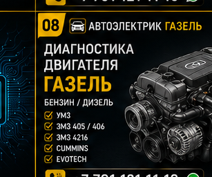
Не работает бензонасос
Причины неисправности и методы диагностики и ремонта.
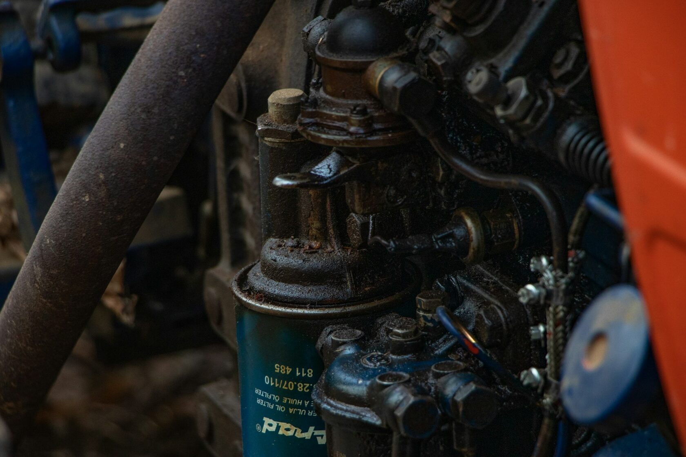
Не включается зажигание
Возможные проблемы с электрической системой зажигания и способы их устранения.
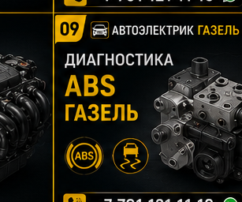
Ошибки в системе управления
Горит Check Engine
Что означает индикатор Check Engine и какие могут быть причины его активации.
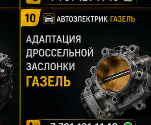
Проблемы с электрооборудованием
Не работает генератор
Причины неисправности генератора и методы её устранения.
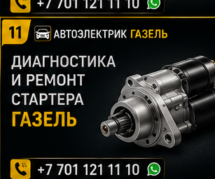
Неисправность аккумулятора
Почему аккумулятор быстро разряжается или не заряжается, и как это исправить.
Что проверяется при диагностике
Компьютерная диагностика проверяет двигатель, топливную систему, форсунки, датчики, генератор, стартер, ABS, иммобилайзер, электропроводку и заряд.
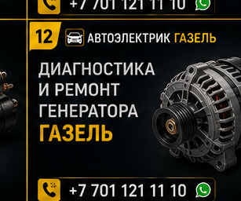
Компьютерная диагностика
Проверка электронного блока управления двигателем, топливной системы, датчиков, генератора, стартера, ABS, иммобилайзера, электропроводки и других систем.
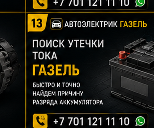
Ремонт системы зажигания
Выявление и устранение неисправностей в системе зажигания автомобиля Газель.
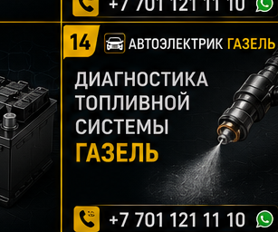
Проверка электрооборудования
Диагностика и ремонт электропроводки, генератора, стартера и других элементов электрооборудования.
Почему стоит выбрать нас
26 лет опыта, современное оборудование, ремонт без лишних замен, официальные документы, выезд к авто, гарантия.
Большой опыт
Более 26 лет работы с коммерческим транспортом.
Современное оборудование
Используем профессиональную диагностическую аппаратуру для точного выявления и устранения проблем.
Ремонт любой сложности
Выполняем ремонт без лишней замены деталей, экономя ваши средства.
Официальные документы
Предоставляем все необходимые чеки и документы.
Стоимость услуг
Компьютерная диагностика и выезд автоэлектрика — от 15 000 ₸; ремонт ЭБУ и иммобилайзера — индивидуально.
Компьютерная диагностика
Диагностика электросистем автомобиля
15000₸
Компьютерная диагностика
Выезд автоэлектрика
Выезд специалиста для диагностики и ремонта
15000₸
Выезд автоэлектрика
Поиск неисправности
Определение причин неисправности автоэлектрики
20000₸
Поиск неисправности
Ремонт проводки
Ремонт электрических проводов и соединений
от 20000₸
Ремонт проводки
Ремонт ЭБУ
Индивидуальный ремонт электронного блока управления
Ремонт ЭБУ (индивидуально)
Ремонт иммобилайзера
Индивидуальный ремонт системы иммобилайзера
60000₸
Ремонт иммобилайзера (индивидуально)
Какие модели обслуживаем и особенности работы
Какие модели Газель вы обслуживаете?
Работаем с Газель Next, Газель Бизнес, Газель NN, Соболь, Газель Фермер и другими модификациями, включая автомобили с бензиновыми и дизельными двигателями.
Можно ли провести диагностику на месте?
Да. Во многих случаях диагностика и часть ремонтных работ могут быть выполнены непосредственно у автомобиля.
Выполняете ли ремонт ЭБУ Газель?
Да.
Работаете ли с организациями?
Да.
Связанные услуги
КОНТАКТЫ ОЛЕГА
📞 Телефон: +7 701 121 11 10
🟢 WhatsApp: +7 701 121 11 10
📍 Адрес: ул. Мартынова, 39, Алматы
🗺 Проложить маршрут
⏰ Круглосуточно, без выходных
🧾 Документы и чеки, работаю на сервисе, выезжаю к клиентам на место, на дом или в офис по Алматы и области.
💬 Консультирую по телефону, помогу определить неисправность даже до выезда.
⚙️ Стаж более 26 лет. Занимаюсь профессионально ремонтом авто, выполняю сложный ремонт блоков.